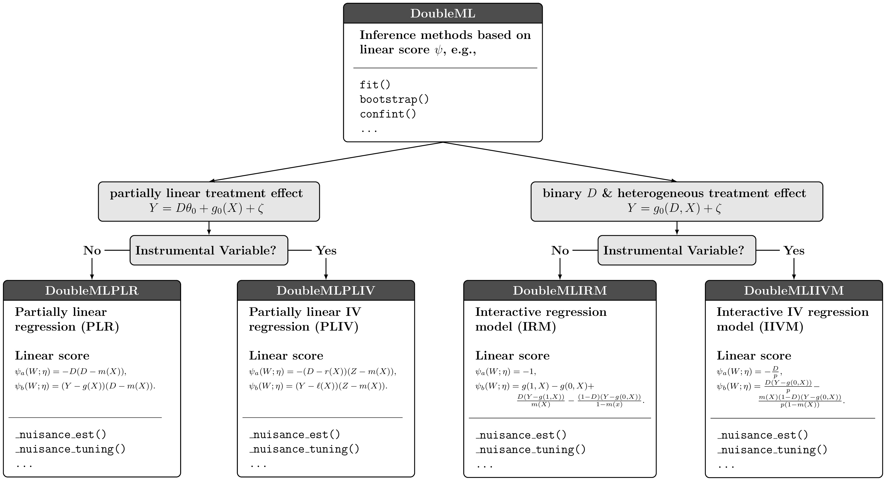

Introduction to DoubleML for Python
Tools for Causality
Grenoble, Sept 25 - 29, 2023
Philipp Bach, Sven Klaassen
Introduction to DoubleML for Python
Introduction to Double Machine Learning
So far, we have focused on DML for the interactive regression model using the doubly robust score for estimation of ATE
However, the DML framework of Chernozhukov et al. (2018) is much more general and works with any causal model with an orthogonal score
We will now have a look at more examples and its implementation
Introduction to Double Machine Learning
- DML can also be used for (partially) linear models and for instrumental variables, quantile regression, difference-in-difference models, \(\ldots\)

Causal models, DoubleML
Introduction to Double Machine Learning
- All of these models are based on the three key ingredients of DML and, hence, share a common structure
- Neyman-orthogonal score
- High-quality ML learners
- Sample splitting
- We exploit the common structure of the causal models in the implementation of DoubleML (Bach et al. 2021, 2022)
Introduction to Double Machine Learning
The general statistical procedures for estimation of the causal parameter, confidence intervals, \(\ldots\) apply to all causal models within the DML framework
These methods are implemented in the abstract base class
DoubleMLModel-specific parts are implemented in model classes which are subclasses of
DoubleML- Example:
DoubleMLIRMhas an implementation of the doubly robust score for estimating the ATE in the interactive regression model
- Example:
Introduction to Double Machine Learning
Class structure, DoubleML
Implementation and Theoretical Framwork of DML
Key ingredients
- Orthogonal Score
- Object-oriented implementation
- Exploit common structure being centered around a (linear) score function \(\psi(\cdot)\)
- High-quality ML
- State-of-the-art ML prediction and tuning methods
- Provided by
scikit-learnandsckit-learn-like learners
- Sample Splitting
- General implementation of sample splitting
Papers, User Guide, Resources
Papers and Materials
R package - with a nontechnical introduction to DML: Bach et al. (2021)
Python package: Bach et al. (2022)
API Docu and examples: docs.doubleml.org
Software implementation:
Leave a 🌟 if you like 😄

DoubleML: Installation
DoubleML (Bach et al. 2021, 2022) is available on PyPI and can be installed via
piporcondaLatest PyPi release
- Latest conda-forge release
- Development version from GitHub
Object Orientation
- DoubleML gives the user a high flexibility with regard to specifications of DML models
- Choice of ML learners for approximation of nuisance parameters
- Different resampling schemes
- DML algorithms (DML1, DML2)
- Different Neyman-orthogonal score functions
- DoubleML can be easily extended
- New model classes with appropriate Neyman-orthogonal score functions can be inherited from abstract base class DoubleML
- Score functions can be provided as
callables(functionsin R) - Resampling schemes are customizable in a flexible way
Getting Started with
DoubleML
DoubleML Workflow Example
Workflow
0. Problem Formulation
Data-Backend
Causal Model
ML Methods
DML Specification
Estimation
Inference
0. Problem Formulation
401(k) Example
Goal: Estimate ATE of eligibility in 401(k) pension plans on employees’ net financial assets
DoubleML Workflow Example
Workflow
- Problem Formulation
1. Data-Backend
Causal Model
ML Methods
DML Specification
Estimation
Inference
1. Data-Backend
- Declare the roles for the treatment variable, the outcome variable and controls
DoubleML Workflow Example
Workflow
Problem Formulation
Data-Backend
2. Causal Model
ML Methods
DML Specification
Estimation
Inference
DoubleML Workflow Example
Workflow
Problem Formulation
Data-Backend
Causal Model
3. ML Methods
DML Specification
Estimation
Inference
3. ML Methods
Initialize the learners with hyperparameters
Internal tuning is optional
# Random forest learners
from sklearn.ensemble import RandomForestClassifier, RandomForestRegressor
ml_l_rf = RandomForestRegressor(n_estimators = 500, max_depth = 7,
max_features = 3, min_samples_leaf = 3)
ml_m_rf = RandomForestClassifier(n_estimators = 500, max_depth = 5,
max_features = 4, min_samples_leaf = 7)DoubleML Workflow Example
Workflow
Problem Formulation
Data-Backend
Causal Model
ML Methods
4. DML Specification
Estimation
Inference
4. DML Specifications
- Initialize the model
DoubleMLobject for the causal model, hereDoubleMLIRM
import numpy as np
import pandas as pd
from doubleml import DoubleMLIRM
np.random.seed(42)
# Default values
dml_irm_rf = DoubleMLIRM(dml_data,
ml_g = ml_l_rf,
ml_m = ml_m_rf)
np.random.seed(42)
# Parametrized by user
dml_irm_rf = DoubleMLIRM(dml_data,
ml_g = ml_l_rf,
ml_m = ml_m_rf,
n_folds = 3,
n_rep = 1,
score = 'ATE',
dml_procedure = 'dml2')import numpy as np
import pandas as pd
from doubleml import DoubleMLIRM
np.random.seed(42)
# Default values
dml_irm_xgb = DoubleMLIRM(dml_data,
ml_g = ml_l_xgb,
ml_m = ml_m_xgb)
np.random.seed(42)
# Parametrized by user
dml_irm_xgb = DoubleMLIRM(dml_data,
ml_g = ml_l_xgb,
ml_m = ml_m_xgb,
n_folds = 3,
n_rep = 1,
score = 'ATE',
dml_procedure = 'dml2')DoubleML Workflow Example
Workflow
Problem Formulation
Data-Backend
Causal Model
ML Methods
DML Specification
Estimation
Inference
5. Estimation
- Use the
fit()method to estimate the model
DoubleML Workflow Example
Workflow
Problem Formulation
Data-Backend
Causal Model
ML Methods
DML Specification
Estimation
Inference
5. Estimation
- For an overview on DoubleML objects use the
print()method
================== DoubleMLIRM Object ==================
------------------ Data summary ------------------
Outcome variable: net_tfa
Treatment variable(s): ['e401']
Covariates: ['age', 'inc', 'educ', 'fsize', 'marr', 'twoearn', 'db', 'pira', 'hown']
Instrument variable(s): None
No. Observations: 9915
------------------ Score & algorithm ------------------
Score function: ATE
DML algorithm: dml2
------------------ Machine learner ------------------
Learner ml_g: RandomForestRegressor(max_depth=7, max_features=3, min_samples_leaf=3,
n_estimators=500)
Learner ml_m: RandomForestClassifier(max_depth=5, max_features=4, min_samples_leaf=7,
n_estimators=500)
Out-of-sample Performance:
Learner ml_g0 RMSE: [[47342.82318784]]
Learner ml_g1 RMSE: [[64073.50906324]]
Learner ml_m RMSE: [[0.44281669]]
------------------ Resampling ------------------
No. folds: 3
No. repeated sample splits: 1
Apply cross-fitting: True
------------------ Fit summary ------------------
coef std err t P>|t| 2.5 % \
e401 8121.564764 1106.553249 7.339516 2.143684e-13 5952.760249
97.5 %
e401 10290.369279 ================== DoubleMLIRM Object ==================
------------------ Data summary ------------------
Outcome variable: net_tfa
Treatment variable(s): ['e401']
Covariates: ['age', 'inc', 'educ', 'fsize', 'marr', 'twoearn', 'db', 'pira', 'hown']
Instrument variable(s): None
No. Observations: 9915
------------------ Score & algorithm ------------------
Score function: ATE
DML algorithm: dml2
------------------ Machine learner ------------------
Learner ml_g: XGBRegressor(base_score=None, booster=None, callbacks=None,
colsample_bylevel=None, colsample_bynode=None,
colsample_bytree=None, early_stopping_rounds=None,
enable_categorical=False, eta=0.1, eval_metric=None,
feature_types=None, gamma=None, gpu_id=None, grow_policy=None,
importance_type=None, interaction_constraints=None,
learning_rate=None, max_bin=None, max_cat_threshold=None,
max_cat_to_onehot=None, max_delta_step=None, max_depth=None,
max_leaves=None, min_child_weight=None, missing=nan,
monotone_constraints=None, n_estimators=35, n_jobs=None,
num_parallel_tree=None, predictor=None, ...)
Learner ml_m: XGBClassifier(base_score=None, booster=None, callbacks=None,
colsample_bylevel=None, colsample_bynode=None,
colsample_bytree=None, early_stopping_rounds=None,
enable_categorical=False, eta=0.1, eval_metric='logloss',
feature_types=None, gamma=None, gpu_id=None, grow_policy=None,
importance_type=None, interaction_constraints=None,
learning_rate=None, max_bin=None, max_cat_threshold=None,
max_cat_to_onehot=None, max_delta_step=None, max_depth=None,
max_leaves=None, min_child_weight=None, missing=nan,
monotone_constraints=None, n_estimators=34, n_jobs=None,
num_parallel_tree=None, predictor=None, ...)
Out-of-sample Performance:
Learner ml_g0 RMSE: [[47198.39376508]]
Learner ml_g1 RMSE: [[65926.53453118]]
Learner ml_m RMSE: [[0.44567814]]
------------------ Resampling ------------------
No. folds: 3
No. repeated sample splits: 1
Apply cross-fitting: True
------------------ Fit summary ------------------
coef std err t P>|t| 2.5 % \
e401 8278.722106 1210.25411 6.840483 7.892687e-12 5906.667639
97.5 %
e401 10650.776573 DoubleML Workflow Example
Workflow
Problem Formulation
Data-Backend
Causal Model
ML Methods
DML Specification
Estimation
Inference
6. Inference
- For confidence intervals use the
confint()method
| coef | std err | t | P>|t| | 2.5 % | 97.5 % | |
|---|---|---|---|---|---|---|
| e401 | 8121.564764 | 1106.553249 | 7.339516 | 2.143684e-13 | 5952.760249 | 10290.369279 |
DoubleML Workflow Example
Workflow
Problem Formulation
Data-Backend
Causal Model
ML Methods
DML Specification
Estimation
Inference
6. Inference
- For confidence intervals use the
confint()method
Full Example: 401(k) Data
A more detailed version of workflow example is available on
and in the
Hands-On Example
Now it’s your turn!
… Open the Uplift Modeling Notebook and follow the workflow…
Appendix
FAQs
Relation to other libraries for Causal ML
DoubleMLprovides a general implementation of the Double Machine Learning approach by Chernozhukov et al. (2018) in Python and RThere are also other open source libraries available for causal machine learning
CausalML(uber, https://github.com/uber/causalml, Chen et al. (2020)) - variety of causal ML learners, i.a. with focus on uplift modeling, CATEs and IATEsEconML(microsoft research, https://github.com/microsoft/EconML, Microsoft Research (2019)) - various causal estimators based on machine learning, among others based on the double machine learning approach…
FAQs
Relation to other libraries for Causal ML
CausalML and EconML have a focus on heterogeneity of treatment effects from their start on
DoubleML focuses on implementing the DML approach and its extensions (example: heterogeneity, diff-in-diff, quantile regression, …)
\(\rightarrow\) Object-orientated implementation based on orthogonal score
\(\rightarrow\) Extendibility and flexibility
References
References
DoubleML - Tools for Causality 2023